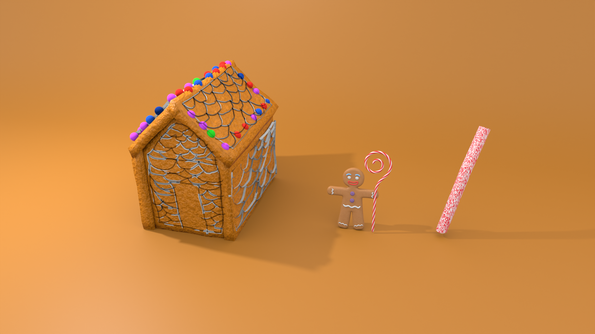

Gingerbread House
I completed the Gingerbread House tutorial by Polygon Runway, creating a stylized 3D scene that combined modeling, texturing, and artistic detailing. Through this project, I learned to use displacement for surface detail, decorate with grease pencil and curves, apply colors and materials effectively, and compose a visually engaging scene—building my confidence in creating creative and detailed Blender environments.

Retro Telephone
I completed the Retro Phone tutorial by Polygon Runway, creating a stylized 3D object in Blender. This project helped me master practical modeling techniques, including using modifiers like Boolean, curve deform methods, and efficient workflow strategies, while emphasizing clean modeling and scene setup. Each small project like this strengthens my ability to turn simple shapes into detailed, creative designs.
Island
I explored Blender by creating my first animation featuring a sea with floating islands. This project taught me the fundamentals of animation, scene composition, and 3D storytelling, while also enhancing my creativity and patience. It was my first full animation attempt, and the experience sparked a deeper interest in 3D design, animation, and visual storytelling.
Donut
I completed the 14-video Blender Beginner Course by Blender Guru, gaining hands-on experience in 3D modeling, materials, lighting, camera setup, rendering, and basic animation. This course strengthened my skills in creating realistic 3D scenes and animations, giving me a solid foundation to build and showcase creative projects in Blender.
Lamp
I completed a 22-minute Blender tutorial by Polygon Runway, learning to create stylized low-poly 3D scenes with effective use of shapes, colors, materials, and lighting. This hands-on experience enhanced my workflow and understanding of scene composition, helping me build more creative and visually engaging 3D projects in Blender.